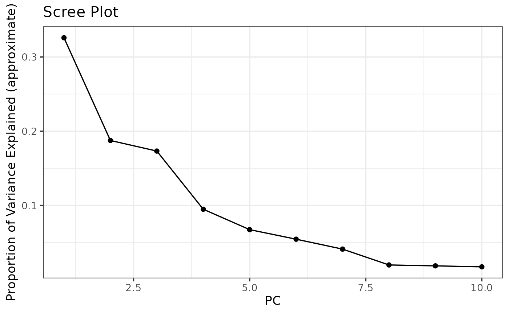

Calculate and plot pcs
Value
GGplot of the given plot.
The output is sensitive to the number of PC's indicated. The program used to calculate PCs returns singular values only for components indicated. So the proportion can only calculate using the variance contained in these components. Consequently, shouldn't set the num.pcs too low, this could lead to strange results.
Examples
# get input
bedfile.path <- system.file(
"extdata",
"Setaria_shattering_example_pruned.bed",
package = "panvaR")
# plot
plot_pc_scree(
bedfile.path = bedfile.path)
